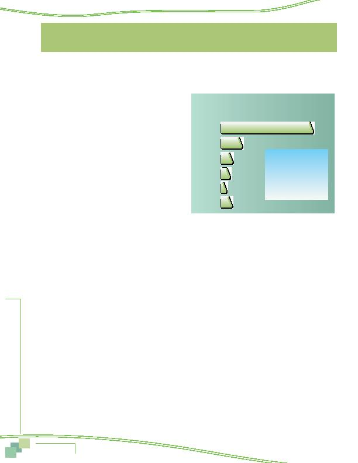

|

on e Comm included: AND WORK HOURS employed part-time. Respondents were assigned to work an average of 4.9 days per week. Some respondents worked one or more weekend days, so the average number of weekdays worked was slightly less, 4.7 days per week. And respondents traveled an average of 4.2 weekdays per week to a work location outside their homes. The majority of these respondents (6% of total respondents) said they were self-employed and had no other work location. The remaining two percent of respondents said they telecommuted from home every day they worked. These two groups of respondents were not asked further questions about commute patterns, but were included in questions about awareness of commute advertising and demographics. Additionally, respondents who telecommuted five days per week were asked questions about their telework experience. they were sick, on holiday or vacation, or otherwise absent from work one or more days during the week, respondents were asked to report how they likely would have traveled to work on those days. Figures 49 through 51 present several different views of modal distribution. drive alone, train (subway/commuter rail), carpool/vanpool, bus, and bike/walk. modes, but this figure includes them to show the percentage of weekly work trips that were eliminated through use of these work schedule options. more than one in five trips. The second most popular mode was train, used for 14.5% of weekly trips and bus was used for about six percent (5.7%). Respondents used carpool or vanpool for 7.0% of weekly commute trips and made a small share of trips (2.3%) by bike or walking. As noted earlier, these "trips" actually were not made, but they were officially assigned as part of the work week, so were included in this distribution. centage use of each of the five travel modes increases. Without telecommute and CWS, the drive alone share would rise to 68.5% of weekly commute trips. The weekly commute trip distribution would be: excluding telecommute and CWS --Carpool/Vanpool 7.5% --Bus 6.0% --Bike/Walk 2.5% |